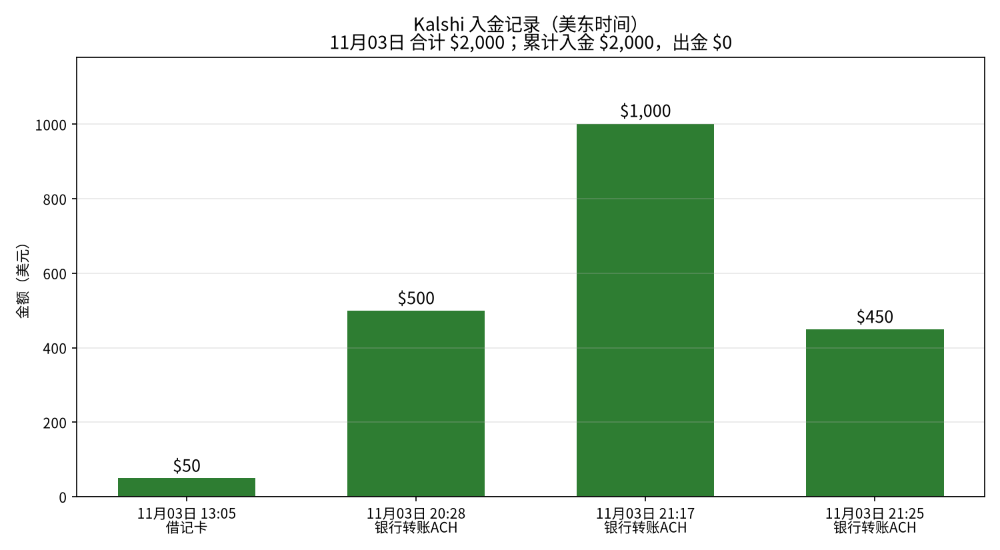
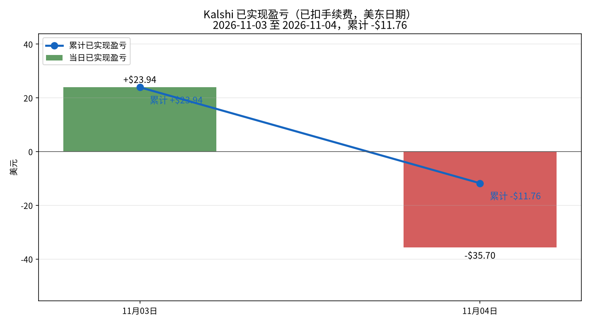
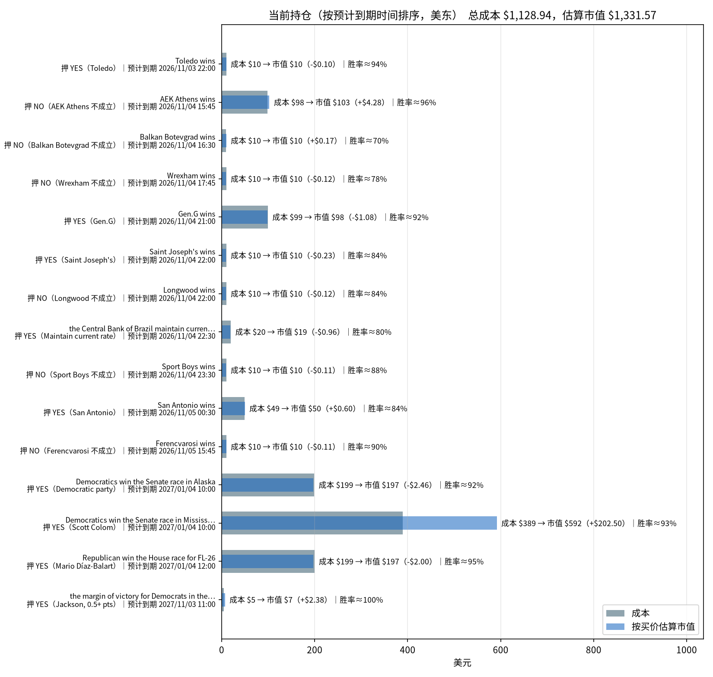

今天（11月4日）到目前为止已实现净盈亏是 -$35.70（已扣手续费）：有 12 个市场结算，合计赚了约 +$201.10，但 Mississippi 共和党参议员这个市场（SENATEMS-26-R）卖出平仓亏了 -$236.80。
| 已实现 | 市场 | 盈亏 |
|---|---|---|
| 结算 | Iowa 参议院 民主党 | +$40.95 |
| 结算 | Montana 参议院 共和党 | +$36.43 |
| 结算 | Maine 参议院 Troy Jackson | +$35.45 |
| 结算 | Maine 参议院 民主党 | +$31.93 |
| 结算 | Michigan 参议院 民主党 | +$28.64 |
| 结算 | 其余 7 个市场 | +$27.70 |
| 卖出平仓 | Mississippi 参议院 共和党 | -$236.80 |
今天一共成交 16 笔，买入 $1,190.80，卖出 $219.76，手续费 $25.10。截至 14:16（美东时间）现金余额 $904.29，持有 9 个市场，按当前买价估算浮盈约 +$196.13，主要来自 Mississippi 民主党（+$198.66）。
数据生成时间：2026-11-04 约 14:45（美东），全部来自 Kalshi 只读 API。持仓价格是生成那一刻的报价，之后会变。

数据来自 Kalshi 的 GET /portfolio/deposits 和 GET /portfolio/withdrawals 接口，时间为美东时间：
| 时间（美东） | 方式 | 金额 | 手续费 | 状态 |
|---|---|---|---|---|
| 2026-11-03 13:05 | 借记卡 | $50.00 | $0 | 已到账 |
| 2026-11-03 20:28 | 银行转账 ACH | $500.00 | $0 | 已到账 |
| 2026-11-03 21:17 | 银行转账 ACH | $1,000.00 | $0 | 已到账 |
| 2026-11-03 21:25 | 银行转账 ACH | $450.00 | $0 | 已到账 |
合计入金 $2,000.00，四笔都在 11 月 3 日。没有出金记录。

| 日期（美东） | 结算盈亏 | 卖出平仓盈亏 | 当日已实现 | 累计 |
|---|---|---|---|---|
| 11 月 3 日 | +$23.94（4 个市场结算） | $0 | +$23.94 | +$23.94 |
| 11 月 4 日（截至目前） | +$201.10（12 个市场结算） | -$236.80（Mississippi 共和党） | -$35.70 | -$11.76 |
/historical/fills、/historical/positions）没有返回记录，因为账户是在归档截止日（2026-09-05）之后开的。charts/pnl_daily.csv对账：现金 $844.32 + 持仓按买价估算的市值 $1,331.57 = $2,175.89。减去入金 $2,000 后，账户整体约 +$175.89。这个数等于已实现 -$11.76 + 浮动 +$202.63 − 持仓已付手续费 $14.98，能对上。

| 预计到期（美东） | 市场 | 押注 | 份数 | 成本 | 均价 | 买价/卖价 | 估算市值 | 浮动盈亏 | 赢了赔付 | 赢了净赚* | 隐含胜率 |
|---|---|---|---|---|---|---|---|---|---|---|---|
| 11/03 22:00（比赛已过） | Toledo vs Sacramento St（NCAA 橄榄球） | YES Toledo 赢 | 10.48 | $9.96 | $0.950 | 0.94/0.95 | $9.85 | -$0.10 | $10.48 | +$0.49 | 94.5% |
| 11/04 15:45 | AEK Athens vs Real Madrid（欧冠） | NO：AEK 不赢 | 107.00 | $98.44 | $0.920 | 0.96/0.97 | $102.72 | +$4.28 | $107.00 | +$8.01 | 96.5% |
| 11/04 16:30 | Balkan Botevgrad vs KK Bosna（欧洲杯篮球） | NO：Balkan 不赢 | 14.22 | $9.78 | $0.688 | 0.70/0.71 | $9.95 | +$0.17 | $14.22 | +$4.22 | 70.5% |
| 11/04 17:45 | Wrexham vs Middlesbrough（英冠） | NO：Wrexham 不赢 | 12.47 | $9.85 | $0.790 | 0.78/0.79 | $9.73 | -$0.12 | $12.47 | +$2.47 | 78.5% |
| 11/04 21:00 | LYON vs Gen.G（英雄联盟） | YES Gen.G 赢 | 108.09 | $99.44 | $0.920 | 0.91/0.92 | $98.36 | -$1.08 | $108.09 | +$8.09 | 91.5% |
| 11/04 22:00 | Longwood vs Saint Joseph's（NCAA 篮球） | YES St. Joseph's 赢 | 11.64 | $9.89 | $0.850 | 0.83/0.84 | $9.66 | -$0.23 | $11.64 | +$1.64 | 83.5% |
| 11/04 22:00 | 同一场 | NO：Longwood 不赢 | 11.64 | $9.89 | $0.850 | 0.84/0.85 | $9.78 | -$0.12 | $11.64 | +$1.64 | 84.5% |
| 11/04 22:30（17:30 公布） | 巴西央行 11 月议息 | YES 维持利率 | 24.08 | $19.75 | $0.820 | 0.78/0.82 | $18.78 | -$0.96 | $24.08 | +$4.09 | 80% |
| 11/04 23:30 | Universitario vs Sport Boys（秘鲁甲） | NO：Sport Boys 不赢 | 11.26 | $9.91 | $0.880 | 0.87/0.88 | $9.80 | -$0.11 | $11.26 | +$1.27 | 87.5% |
| 11/05 00:30 | Dallas vs San Antonio（NBA） | YES 马刺赢 | 60.21 | $49.37 | $0.820 | 0.83/0.84 | $49.97 | +$0.60 | $60.21 | +$10.22 | 83.5% |
| 11/05 15:45 | Milan vs Ferencváros（欧联） | NO：Ferencváros 不赢 | 11.03 | $9.93 | $0.900 | 0.89/0.90 | $9.82 | -$0.11 | $11.03 | +$1.03 | 89.5% |
| 2027/01/04 10:00 | Alaska 参议院 | YES 民主党 | 213.46 | $199.06 | $0.933 | 0.921/0.922 | $196.60 | -$2.46 | $213.46 | +$13.46 | 92.2% |
| 2027/01/04 10:00 | Mississippi 参议院 | YES 民主党（Scott Colom） | 638.47 | $389.37 | $0.610 | 0.927/0.929 | $591.86 | +$202.50 | $638.47 | +$238.47 | 92.8% |
| 2027/01/04 12:00 | FL-26 众议院 | YES 共和党（Díaz-Balart） | 207.81 | $199.42 | $0.960 | 0.950/0.959 | $197.42 | -$2.00 | $207.81 | +$7.82 | 95.4% |
| 最晚 2027/11/03 11:00（选举已过） | Maine 参议院民主党胜幅 ≥0.5 个百分点 | YES | 7.29 | $4.88 | $0.670 | 0.997/0.998 | $7.27 | +$2.38 | $7.29 | +$2.29 | 99.8% |
| 合计（15 个市场） | $1,128.94 | $1,331.57 | +$202.63 | $1,449.15 | +$305.23 |
*赢了净赚 = 赔付 − 成本 − 该仓位已付手续费。隐含胜率取你这一边买价和卖价的中间值。"预计到期"取 Kalshi 的 expected_expiration_time；Maine 那个市场没有这个字段，所以用最晚到期时间。所有市场都允许提前结算。
总敞口。 持仓总成本 $1,128.94，按当前买价能卖 $1,331.57，浮盈 +$202.63（还没扣卖出手续费）。如果全部押中，赔付 $1,449.15，扣掉成本和手续费还能再赚 $305.23；最坏情况是全部押错，亏掉 $1,128.94。账上另有现金 $844.32。
什么时候到期：
集中度风险。 最大的一笔是 Mississippi 民主党：成本占 34.5%，按市值占 44.4%，而且整个账户的浮盈几乎都来自它（+$202.50）。另外，今天卖亏 -$236.80 的也是同一场 Mississippi 选举（共和党那边），所以这一场选举决定了你目前大部分盈亏。三个选举市场合计占总成本 70%。体育类仓位单笔大多在 $10 左右，只有 AEK、Gen.G、马刺三笔比较大。
还要注意： St. Joseph's 那两笔（YES St. Joseph's 赢 + NO Longwood 赢）押的是同一个结果，不是对冲，等于在这场比赛上下了双倍注，合计 $19.78。
确定程度：
图表文件：charts/deposits.png、charts/pnl_curve.png、charts/positions.png；每日盈亏 charts/pnl_daily.csv；原始分析数据 data/analysis.json；生成脚本 analysis.py。
| 时间(ET) | 市场 | 方向 | 份数 | 价格 | 金额 | 手续费 |
|---|---|---|---|---|---|---|
| 00:43:33 | Will Republicans win the Senate race in Mississippi?（Cindy Hyde-Smith）SENATEMS-26-R |
买入 YES | 138.04 | $0.7100 | $98.01 | $1.99 |
| 00:53:32 | Will Republicans win the Senate race in Mississippi?（Cindy Hyde-Smith）SENATEMS-26-R |
卖出 YES | 24.40 | $0.4000 | $9.76 | $0.41 |
| 00:53:32 | Will Republicans win the Senate race in Mississippi?（Cindy Hyde-Smith）SENATEMS-26-R |
卖出 YES | 500.00 | $0.4200 | $210.00 | $8.53 |
| 00:56:42 | Will Democratics win the Senate race in Mississippi?（Scott Colom）SENATEMS-26-D |
买入 YES | 324.25 | $0.6000 | $194.55 | $5.45 |
| 00:56:56 | Will Democratics win the Senate race in Mississippi?（Scott Colom）SENATEMS-26-D |
买入 YES | 314.22 | $0.6200 | $194.82 | $5.18 |
| 01:13:02 | Will Republicans win the Senate race in Nebraska?（Pete Ricketts）SENATENE-26-R |
买入 YES | 28.45 | $0.9840 | $27.99 | $0.03 |
| 02:43:16 | San Antonio winsKXNBAGAME-26NOV04DALSAS-SAS |
买入 YES | 60.21 | $0.8200 | $49.37 | $0.62 |
| 02:44:26 | Toledo winsKXNCAAFGAME-26NOV03TOLSAC-TOL |
买入 YES | 10.48 | $0.9500 | $9.96 | $0.03 |
| 13:52:08 | Will Republican win the House race for FL-26?（Mario Díaz-Balart）KXHOUSERACE-FL26-26-R |
买入 YES | 100.00 | $0.9600 | $96.00 | $0.27 |
| 13:52:08 | Will Republican win the House race for FL-26?（Mario Díaz-Balart）KXHOUSERACE-FL26-26-R |
买入 YES | 75.00 | $0.9590 | $71.92 | $0.21 |
| 13:52:08 | Will Republican win the House race for FL-26?（Mario Díaz-Balart）KXHOUSERACE-FL26-26-R |
买入 YES | 32.81 | $0.9600 | $31.50 | $0.09 |
| 13:53:23 | Will the Central Bank of Brazil maintain current rate at the November Monetary Policy Meeting?（Maintain current rate）KXCBDECISIONBRAZIL-26NOV04-HOLD |
买入 YES | 24.08 | $0.8200 | $19.75 | $0.25 |
| 13:56:28 | Gen.G winsKXLOLGAME-26NOV041700LYGEN-GEN |
买入 YES | 108.09 | $0.9200 | $99.44 | $0.56 |
| 13:58:42 | Will Democratics win the Senate race in Alaska?（Democratic party）SENATEAK-26-D |
买入 YES | 110.52 | $0.9330 | $103.12 | $0.48 |
| 13:58:42 | Will Democratics win the Senate race in Alaska?（Democratic party）SENATEAK-26-D |
买入 YES | 102.94 | $0.9320 | $95.94 | $0.46 |
| 14:15:58 | AEK Athens winsKXUCLGAME-26NOV04AEKRMA-AEK |
买入 NO | 107.00 | $0.9200 | $98.44 | $0.55 |
合计：买入 $1,190.80，卖出 $219.76，手续费 $25.10
“买入/卖出”根据成交前的持仓方向判断（Kalshi 中卖 YES 与买 NO 是同一方向的订单）。
| 结算时间(ET) | 市场 | 结果 | 持有 | 结算赔付 | 成本 | 手续费 | 盈亏 |
|---|---|---|---|---|---|---|---|
| 00:03 | Will Texas Governor winner be Democratic party and Texas Senate winner be Democratic party?（Gina Hinojosa and James Talarico win）KXTXSENGOVCOMBO-26NOV-DEMDEM |
YES | YES 77.22 | $77.22 | $69.50 | $0.49 | +$7.24 |
| 00:08 | Will Democratics win the Senate race in Iowa?（Josh Turek）SENATEIA-26-D |
YES | YES 210.94 | $210.94 | $167.61 | $2.39 | +$40.95 |
| 00:40 | Will Democratic win the House race for TX-15?（Bobby Pulido）HOUSETX15-26-D |
YES | YES 2.18 | $2.18 | $1.98 | $0.01 | +$0.19 |
| 00:42 | Will Democratic (DFL)s win the Senate race in Minnesota?（Peggy Flanagan）SENATEMN-26-D |
YES | YES 5.46 | $5.46 | $4.97 | $0.03 | +$0.46 |
| 01:02 | Will Democrats win the House in 2026?（Democratic Party）CONTROLH-2026-D |
YES | YES 21.40 | $21.40 | $19.90 | $0.10 | +$1.40 |
| 01:34 | Will Democratics win the Senate race in Maine?（Troy Jackson）SENATEME-26-D |
YES | YES 230.09 | $230.09 | $196.19 | $1.97 | +$31.93 |
| 01:35 | Will Texas Senate be James Talarico wins AND Maine Senate be Troy Jackson wins for Nov 2026?（James Talarico and Troy Jackson）KXMETXCOMBO-26NOVB-TAL-JAC |
YES | YES 53.50 | $53.50 | $49.76 | $0.24 | +$3.50 |
| 01:37 | Who will win the 2026 Maine Senate election?（Troy Jackson）KXMESENATEPERSON-26-TJAC |
YES | YES 354.70 | $354.70 | $316.99 | $2.26 | +$35.45 |
| 03:04 | Will Democratics win the Senate race in Michigan?（Abdul El-Sayed）SENATEMI-26-D |
YES | YES 420.65 | $420.65 | $390.02 | $1.99 | +$28.64 |
| 03:05 | Who will win the 2026 Michigan Senate race?（Abdul El-Sayed）KXMISENATE-26-AELS |
YES | YES 108.12 | $108.12 | $99.43 | $0.56 | +$8.14 |
| 03:27 | Will Republicans win the Senate race in Montana?（Kurt Alme）SENATEMT-26-R |
YES | YES 331.39 | $331.39 | $292.58 | $2.37 | +$36.43 |
| 04:08 | Will Republicans win the Senate race in Nebraska?（Pete Ricketts）SENATENE-26-R |
YES | YES 84.79 | $84.79 | $77.57 | $0.45 | +$6.77 |
| 市场 | 平仓份数 | 卖出所得 | 开仓成本(均价) | 毛盈亏 | 手续费(开+平) | 净盈亏 | Kalshi realized_pnl(累计,不含费) |
|---|---|---|---|---|---|---|---|
Will Republicans win the Senate race in Mississippi?（Cindy Hyde-Smith）SENATEMS-26-R |
524.40 | $219.76 | $443.17 | -$223.41 | $13.39 | -$236.80 | -$223.41 |
| 市场 | 来源 | 净盈亏 |
|---|---|---|
| Will Democratics win the Senate race in Iowa?（Josh Turek） | 结算 | +$40.95 |
| Will Republicans win the Senate race in Montana?（Kurt Alme） | 结算 | +$36.43 |
| Who will win the 2026 Maine Senate election?（Troy Jackson） | 结算 | +$35.45 |
| Will Democratics win the Senate race in Maine?（Troy Jackson） | 结算 | +$31.93 |
| Will Democratics win the Senate race in Michigan?（Abdul El-Sayed） | 结算 | +$28.64 |
| Who will win the 2026 Michigan Senate race?（Abdul El-Sayed） | 结算 | +$8.14 |
| Will Texas Governor winner be Democratic party and Texas Senate winner be Democratic party?（Gina Hinojosa and James Talarico win） | 结算 | +$7.24 |
| Will Republicans win the Senate race in Nebraska?（Pete Ricketts） | 结算 | +$6.77 |
| Will Texas Senate be James Talarico wins AND Maine Senate be Troy Jackson wins for Nov 2026?（James Talarico and Troy Jackson） | 结算 | +$3.50 |
| Will Democrats win the House in 2026?（Democratic Party） | 结算 | +$1.40 |
| Will Democratic (DFL)s win the Senate race in Minnesota?（Peggy Flanagan） | 结算 | +$0.46 |
| Will Democratic win the House race for TX-15?（Bobby Pulido） | 结算 | +$0.19 |
| Will Republicans win the Senate race in Mississippi?（Cindy Hyde-Smith） | 卖出平仓 | -$236.80 |
当日已实现净盈亏合计：-$35.70（盈利 12 个市场，亏损 1 个市场；均已扣手续费）
当天买入但尚未平仓/结算的仓位不计入已实现盈亏，见下方持仓。
| 市场 | 方向 | 份数 | 成本 | 均价 | 当前买价(bid) | 估算市值 | 浮动盈亏(估) |
|---|---|---|---|---|---|---|---|
Will Democratics win the Senate race in Mississippi?（Scott Colom）SENATEMS-26-D |
YES | 638.47 | $389.37 | $0.6098 | $0.9210 | $588.03 | +$198.66 |
Will Republican win the House race for FL-26?（Mario Díaz-Balart）KXHOUSERACE-FL26-26-R |
YES | 207.81 | $199.42 | $0.9596 | $0.9500 | $197.42 | -$2.00 |
Will Democratics win the Senate race in Alaska?（Democratic party）SENATEAK-26-D |
YES | 213.46 | $199.06 | $0.9325 | $0.9300 | $198.52 | -$0.54 |
Gen.G winsKXLOLGAME-26NOV041700LYGEN-GEN |
YES | 108.09 | $99.44 | $0.9200 | $0.9100 | $98.36 | -$1.08 |
AEK Athens winsKXUCLGAME-26NOV04AEKRMA-AEK |
NO | 107.00 | $98.44 | $0.9200 | $0.9100 | $97.37 | -$1.07 |
San Antonio winsKXNBAGAME-26NOV04DALSAS-SAS |
YES | 60.21 | $49.37 | $0.8200 | $0.8300 | $49.97 | +$0.60 |
Will the Central Bank of Brazil maintain current rate at the November Monetary Policy Meeting?（Maintain current rate）KXCBDECISIONBRAZIL-26NOV04-HOLD |
YES | 24.08 | $19.75 | $0.8200 | $0.7900 | $19.02 | -$0.72 |
Toledo winsKXNCAAFGAME-26NOV03TOLSAC-TOL |
YES | 10.48 | $9.96 | $0.9500 | $0.9400 | $9.85 | -$0.10 |
Will the margin of victory for Democrats in the U.S. Senate election in Maine be at least 0.5 percentage points?（Jackson, 0.5+ pts）KXMIDTERMMOV-MESEND-P0.5 |
YES | 7.29 | $4.88 | $0.6700 | $0.9970 | $7.27 | +$2.38 |
持仓总成本 $1,069.69，按当前买价估算市值 $1,265.82，浮动盈亏 +$196.13（估算，未扣卖出手续费）
口径说明：结算盈亏 = 结算赔付 − 持仓成本 − 该仓位累计手续费；卖出平仓盈亏用平均成本法（含开仓、平仓手续费）。数据全部来自 Kalshi 只读 API。